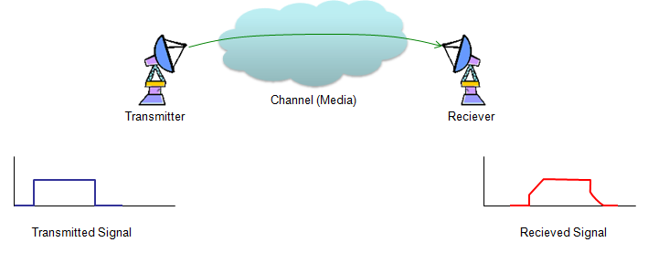
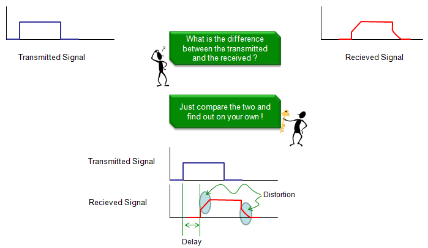
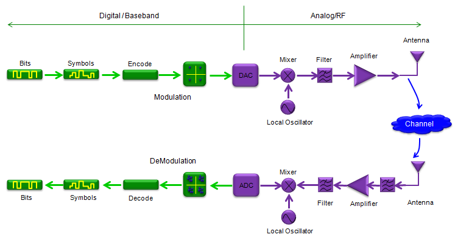

|
Communication - Overview Home : www.sharetechnote.com |
|
Communication Technology is a special technique to send data from one place to another. A typical concept can be illustrated as follows. As you see, there are at least three major components getting involved in any kind of communication process, a sender (transmitter) and reciever and the channel. You would intuitively know what is transmitter and reciever. What is 'channel' ? Channel is a physical media through which the transmitted signal follow. For example, in a very simple communication system like RS232. What you call RS232 cable (made up of copper) is the channel. Let's think about ethernet communication (wired LAN). In this case, what you call LAN cable is the channel (one PC can be an transmitter and another PC can be a reciever.). How about mobile communication like a mobile phone ? My mobile phone and a basestation can be a transmitter and reciever and the air space and all other obstacles(e.g, mountain, building etc) in between a mobile phone and a base station can be a channel. In short, a signal (data) from a transmitter always go through a specific channel to reach the reciever. Studying the communication system means understanding the characteristics of those three major components, Transmitter, Channel, Reciever.

Now let's loot at the illustration shown above and assume that a transmitter sent a signal as shown in the left bottom (in blue) the signal detected by the reciever is shown in the right side (in red). What is the first thing you noticed in the illustration ? It would be that the transmitted signal and the received signal is not exactly same.
What is the difference ? Let's look at following illustration. The difference in this specific example is as follows. 
Now you would ask why we have this kind of differences ? Intuitively you may think of several possible reasons as follows. i) Transmitter didn't send clear signal. (It was supposed to send the exactly same shaped as shown in the illustration, but it failed to send such a clean signal). ii) Reciever didn't detect the signal very well. iii) The signal was changed (distorted) while it follow through the channel. Any of these problem can happen. Actually in most cases, all of these problem happens simulteneously. The purpose of studying communication technology is to find techniques to reduce these problems as much as possible and find out proper answers to following questions. i) How can I design a transmitter that can transmitter a signal exactly as I intended ? ii) How can I reduce the influence of the distortion (and noise) created by the channel ? iii) How can I design a reciever that can accurately detect the signal as I intended ? You may just recall all those mathematical equations and techniques like transfer functions, convolution, deconvolution, impulse response, filter, fading etc from text books and have no idea on why we need those things and how those things gives you the answers to the fundamental questions listed above ?
What would be the most difficult question among them ? I think it is question ii) and very large portions of theories and techniques that we learn from the text book is mainly to find the answers to the question ii). In other words, if we can find and use as we like a medium(channel) which does not distort the signal going through it, most of communication text book can be written in much simpler way.
Following is an example of a typical communication system. More specifically, it is a typical structure of wireless communication. Usually, the parts illustrated in green can be seen both in wireless and wired communication, but the parts illustrated in violet would be seen in wireless communication. What you usually see in digital communication text book or signal processing books are related to the parts in green. What you see in RF text book are related to the parts in violet. I would not exaplain each of these components in detail here. The purpose of putting this illustration in this page is just to give you a big picture of a whole communication system.
For the details of the parts illustrated in green, refer to 'Communication Technology' and Signal Processing and Communication page in Matlab/Octave pages. For the parts in violet, I would try posting other separate pages in the future. For now, just try to follow through each components and make a story on your own based on your common sense.

|